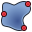
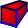

Верстак PartDesign предоставляет инструменты для моделирования сложных твердотельных деталей и базируется на Feature editing methodology. Он сфокусирован, но не ограничен, на создании механических деталей. Он неразрывно связан с верстаком Sketcher.

Базовые концепции
Feature Editing Methodology
В то время как верстак Part и прочие верстаки FreeCAD конструируют модели комбинированием форм, верстак PartDesign использует features. Feature это операция, модифицирующая форму модели.
Первая feature обычно называется base feature. По мере добавления features к модели, каждая feature берёт форму предыдущей и добавляет или убирает matter, создавая последовательность зависимостей от одной feature к другой. Как результат, эта методология имитирует общие производственные процессы: блок обрезается по одной стороне, затем по другой, добавляются отверстия, скругления и так далее.
Все features перечислены последовательно в древе модели и могут редактироваться в любое время, где последняя feature внизу представляет итоговую деталь.
Возможности могут быть отсортированы по различным категориям:
- Profile-based: эти features основываются на профиле для определения формы добавляемого или удаляемого материала. Профиль может быть эскизом, плоской гранью существующей геометрии (профиль будет выделен из кромки), объект ShapeBinder или Draft, который был включён в активное Тело.
- Additive: добавляют материал к существующей модели. Аддитивные features показываются жёлтыми иконками.
- Subtractive: убирают материал из существующей модели. Субтрактивные features показывают красные и голубые иконки.
- Primitive-based: базирующиеся на геометрических примитивах (куб, цилиндр, конус, тор…). Они могут быть аддитивными или субтрактивными.
- Transformation features: они применяют трансформацию к существующим features (отражение, линейный или полярный паттерн, мультитрансформация).
- Dress-up: features, которые пликладывают обработку к фаскам или граням, такие как скругления, фаски, или drafts.
- Procedural: могут быть отнесены к features, которые не базируются на эскизировании, вроде трансформаций и dress-up features.
Твёрдое тело
Body это контейнер, группирующий последовательность из feature, формирующих единое монолитное тело.
Что значит единое монолитное тело? Это элемент вроде литья или чего-то выточенного из единого блока металла. Если он включает гвозди, винты, клей или пайку, это не единое монолитное тело. Например, деревянный стул изготавливается из нескольких тел, по одному для каждого из компонентов (ножки, планки, сиденья и так далее).
В документе FreeCAD могут быть создано несколько тел, они могут быть скомбинированы для формирования единого монолитного твёрдого тела.
Когда модель требует несколько тел, как в предыдущем примере деревянного стула, может быть использован Part container общего назначения для их группировки и совместного их перемещения как единого целого.
Body Visibility Management
По умолчанию тело (Body) представляется извне самым последним элементом. Этот элемент определяется по умолчанию как верхушка. Хорошая аналогия - выражение верхушка айсберга: только верхушка видна над водой, большая часть объёма айсберга (остальные элементы) скрыты. Когда новые feature добавляются к телу, видимость предыдущих отключается, и верхушкой становятся новые.
Только одна feature может быть видима одновременно. Возможно переключение видимости любой feature в теле, выбрав её в древе Модели и нажав пробел, получив в результате откат в истории создания тела.
Body Origin
The body has an Origin which consists of reference planes (XY, XZ, YZ) and axes (X, Y, Z) that can be used by sketches and features. Sketches can be attached to Origin planes, and they no longer need to be mapped to planar faces for features based on them to be added or subtracted from the model.
Перемещение и реорганизация объектов
It is possible to temporarily redefine the tip to a feature in the middle of the Body tree to insert new objects (features, sketches or datum geometry). It is also possible to reorder features under a Body, or to move them to a different Body. Select the object and right-click to get a contextual menu that will offer both options. The operation may be prevented if the object has dependencies in the source Body, such as being attached to a face. To move a sketch to another Body, it should not contain links to external geometry.
Datum Geometry
Datum geometry consists of custom planes, lines, points or externally linked shapes. They can be created for use as reference by sketches and features. There is a multitude of attachment possibilities for datums.
Cross-referencing
It is possible to cross-reference elements from a body in another body via datums. For example the datum shape binder allows to copy over faces from a body as reference in another one. This should make it easy to build a box with fitting cover in two different bodies. FreeCAD helps you to not accidentally link to other bodies and queries your intent.
Attachment
Object attachment is not a specific PartDesign tool, but rather a Part utility introduced in v0.17 that can be found in the Part menu. It is heavily used in the PartDesign workbench to attach sketches and reference geometry to the standard planes and axes of the Body. Very extensive ways of creating datum points, lines and planes are available. Optional attachment offset parameters make this tool very versatile.
More info can be found in the Attachment page.
Advice for creating stable models
The idea of parametric modeling implies that you can change the values of certain parameters and subsequent steps are changed according to the new values. However, when severe changes are made, the model can break. Compared to previous FreeCAD versions breaking can be minimized when you respect the following design principles:
- Basically, you need to stop mapping sketches to faces - entirely! Place your sketches on standard planes, or on custom datum planes.
- When creating datum geometry, do not base it on the part topology, base it on standard planes/axes and/or sketches.
- Use a "master sketch". That is a preferably not too complicated sketch which contains basic geometric elements of your model. These elements can be referenced when modeling subsequent features. Such a master sketch will often be the first sketch in the Body but it doesn't have to be; in fact you don't even have to use it at all for anything else but being referenced.
- If you inevitably have to reference an intermediate feature, e.g. the result of a thickness operation, use the first reference possible in the list of subsequent features where the referenced geometric element occurs. From FreeCAD 0.17 on you don't have to use the latest feature. If you take an early feature as reference, all changes to intermediate steps won't break your model. And again it is better to reference a sketch than edges and vertices of a solid
Инструменты
The Part Design tools are all located in the Part Design menu and the PartDesign toolbar that appear when you load the Part Design workbench.
Structure tools
These are tools to organize the Model tree.
-
 Part: adds a new Part container in the active document and makes it active.
Part: adds a new Part container in the active document and makes it active. -
 Group: adds a Group in the active document's Model tree.
Group: adds a Group in the active document's Model tree.
Part Design Helper tools
 Create body: Creates a Body in the active document and makes it active.
Create body: Creates a Body in the active document and makes it active.
 Create sketch: creates a new sketch on a selected face or plane. If no face is selected while this tool is executed, the user is prompted to select a plane from the Tasks panel. The interface then switches to the Sketcher_Workbench in sketch editing mode.
Create sketch: creates a new sketch on a selected face or plane. If no face is selected while this tool is executed, the user is prompted to select a plane from the Tasks panel. The interface then switches to the Sketcher_Workbench in sketch editing mode.
-
 Edit sketch: Edit the selected Sketch.
Edit sketch: Edit the selected Sketch.
-
 Map sketch to face: Maps a sketch to a previously selected plane or a face of the active body.
Map sketch to face: Maps a sketch to a previously selected plane or a face of the active body.
Part Design Modeling tools
Datum tools
 Create a datum point: creates a datum point in the active body.
Create a datum point: creates a datum point in the active body.
 Create a datum line: creates a datum line in the active body.
Create a datum line: creates a datum line in the active body.
 Create a datum plane: creates a datum plane in the active body.
Create a datum plane: creates a datum plane in the active body.
-  Create a shape binder: creates a shape binder in the active body.
{kind=link}
 Create a clone: creates a clone of the selected body.
Create a clone: creates a clone of the selected body.
Additive tools
These are tools for creating base features or adding material to an existing solid body.
-
 Pad: extrudes a solid from a selected sketch.
Pad: extrudes a solid from a selected sketch.
-
 Revolution: creates a solid by revolving a sketch around an axis. The sketch must form a closed profile.
Revolution: creates a solid by revolving a sketch around an axis. The sketch must form a closed profile.
 Additive loft: creates a solid by making a transition between two or more sketches.
Additive loft: creates a solid by making a transition between two or more sketches.
- Additive pipe: creates a solid by sweeping one or more sketches along an open or closed path.
{kind=link}
- Create an additive primitive: adds an additive primitive to the active body.
 Additive box: creates an additive box.
Additive box: creates an additive box.
 Additive cone: creates an additive cone.
Additive cone: creates an additive cone.
 Additive cylinder: creates an additive cylinder.
Additive cylinder: creates an additive cylinder.
 Additive ellipsoid: creates an additive ellipsoid.
Additive ellipsoid: creates an additive ellipsoid.
 Additive prism: creates an additive prism.
Additive prism: creates an additive prism.
 Additive sphere: creates an additive sphere.
Additive sphere: creates an additive sphere.
 Additive torus: creates an additive torus.
Additive torus: creates an additive torus.
 Additive wedge: creates an additive wedge.
Additive wedge: creates an additive wedge.
Subtractive tools
These are tools for subtracting material from an existing body.
-
 Pocket: creates a pocket from a selected sketch.
Pocket: creates a pocket from a selected sketch.
-
 Hole: creates a hole feature from a selected sketch. The sketch must contain one or multiple circles.
Hole: creates a hole feature from a selected sketch. The sketch must contain one or multiple circles.
-
 Groove: creates a groove by revolving a sketch around an axis.
Groove: creates a groove by revolving a sketch around an axis.
 Subtractive loft: creates a solid shape by making a transition between two or more sketches and subtracts it from the active body.
Subtractive loft: creates a solid shape by making a transition between two or more sketches and subtracts it from the active body.
 Subtractive pipe: creates a solid shape by sweeping one or more sketches along an open or closed path and subtracts it from the active body.
Subtractive pipe: creates a solid shape by sweeping one or more sketches along an open or closed path and subtracts it from the active body.
- Create a subtractive primitive: adds a subtractive primitive to the active body.
 Subtractive box: adds a subtractive box to the active body.
Subtractive box: adds a subtractive box to the active body.
 Subtractive cone: adds a subtractive cone to the active body.
Subtractive cone: adds a subtractive cone to the active body.
 Subtractive cylinder: adds a subtractive cylinder to the active body.
Subtractive cylinder: adds a subtractive cylinder to the active body.
 Subtractive ellipsoid: adds a subtractive ellipsoid to the active body.
Subtractive ellipsoid: adds a subtractive ellipsoid to the active body.
- Subtractive prism: adds a subtractive prism to the active body.
{kind=link}
 Subtractive sphere: adds a subtractive sphere to the active body.
Subtractive sphere: adds a subtractive sphere to the active body.
 Subtractive torus: adds a subtractive torus to the active body.
Subtractive torus: adds a subtractive torus to the active body.
-  Subtractive wedge: adds a subtractive wedge to the active body.
{kind=link}
Transformation tools
These are tools for transforming existing features. They will allow you to choose which features to transform.
-
 Mirrored: mirrors one or more features on a plane or face.
Mirrored: mirrors one or more features on a plane or face.
-
 Linear Pattern: creates a linear pattern based on one or more features.
Linear Pattern: creates a linear pattern based on one or more features.
-
 Polar Pattern: creates a polar pattern of one or more features.
Polar Pattern: creates a polar pattern of one or more features.
-
 Create MultiTransform: creates a pattern with any combination of the other transformations.
Create MultiTransform: creates a pattern with any combination of the other transformations.
Dress-up tools
These tools apply a treatment to the selected edges or faces.
 Fillet: fillets (rounds) edges of the active body.
Fillet: fillets (rounds) edges of the active body.
 Chamfer: chamfers edges of the active body.
Chamfer: chamfers edges of the active body.
 Draft: applies and angular draft to faces of the active body.
Draft: applies and angular draft to faces of the active body.
 Thickness: creates a thick shell from the active body and opens selected face(s).
Thickness: creates a thick shell from the active body and opens selected face(s).
Boolean
 Boolean operation: imports one or more Bodies or PartDesign Clones into the active body and applies a Boolean operation.
Boolean operation: imports one or more Bodies or PartDesign Clones into the active body and applies a Boolean operation.
Extras
Some additional functionality found in the Part Design menu:
- Migrate: migrates files created with older FreeCAD versions. If the file is pure PartDesign feature-based, migration should succeed. If the file contains mixed Part/Part Design/Draft objects, the conversion will most likely fail.
-
 Shaft design wizard: Generates a shaft from a table of values and allows to analyze forces and moments. The shaft is made with a revolved sketch that can be edited.
Shaft design wizard: Generates a shaft from a table of values and allows to analyze forces and moments. The shaft is made with a revolved sketch that can be edited.
-
 Involute gear: creates an involute gear profile that can be used by a Pad.
Involute gear: creates an involute gear profile that can be used by a Pad.
Contextual Menu tools
 Set tip: redefines the tip, which is the feature exposed outside of the Body.
Set tip: redefines the tip, which is the feature exposed outside of the Body.
- Move object to other body: moves the selected sketch, datum geometry or feature to another Body.
- Move object after other object: allows reordering of the Body tree by moving the selected sketch, datum geometry or feature to another position in the list of features.
Preferences
 Preferences...: Preferences disposable in PartDesign Tools.
Preferences...: Preferences disposable in PartDesign Tools.
Tutorials
- Creating a simple part with PartDesign v0.17
- Basic Part Design Tutorial 017
- PartDesign Bearingholder Tutorial I (needs updating)
- PartDesign Bearingholder Tutorial II (needs updating)
Links
- What's new in PartDesign Next
- Updated PartDesign workflow
- FC v0.17dev: Part Design Next Usecases and Best practices
- Sandbox:Part Design Next